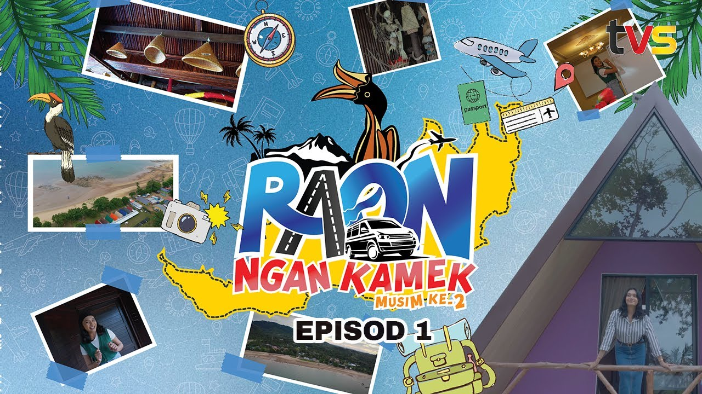
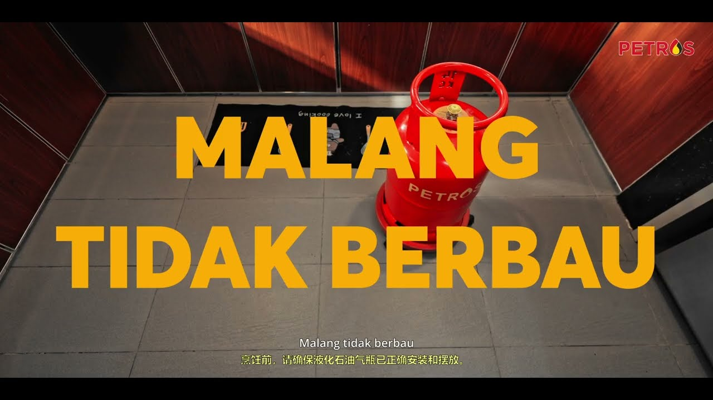
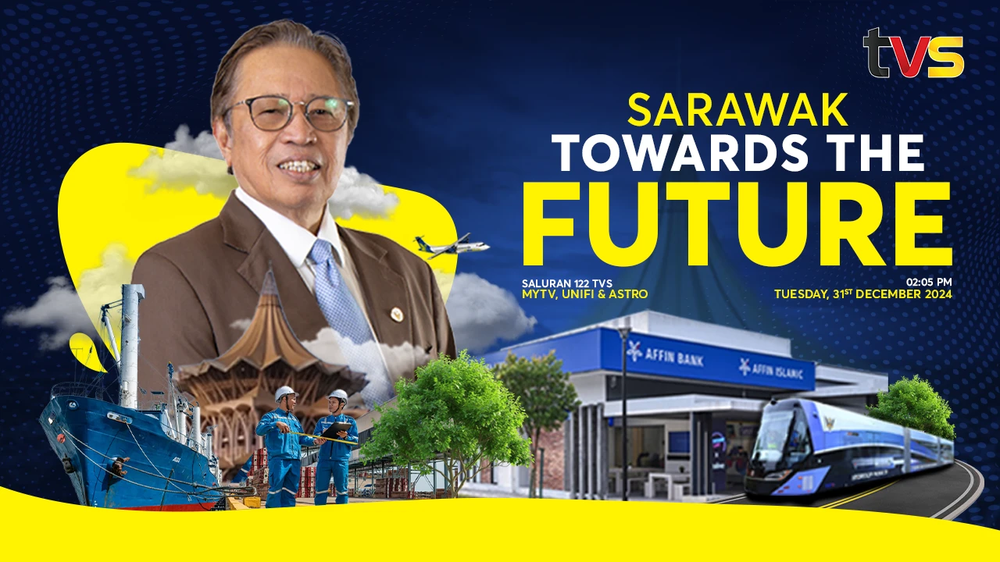

01 / TV DRAMA / TVS
RAON NGAN
KAMEK S02
13EPISODES
STREAMING FROM
SARAWAK, MALAYSIA
VIDEO · STORY · SOCIAL
SIGNAL READY / PRESS ENTER OR SPACE
PLAY / 01
00:00:00
SARAWAK →
WORLDWIDE
VIDEO EDITOR · SCRIPTWRITER · GRAPHIC DESIGNER
I turn a good brief into a story with rhythm, feeling and a reason to keep watching.
WATCH
Television, tourism and exhibition films—made with the same care for story, structure and the last frame.

01 / TV DRAMA / TVS

02 / CORPORATE SAFETY / PETROSNIAGA

03 / TVS DOCUMENTARY / 2024
Offline editing for documentary, broadcast, branded content and social. Every cut has a job: carry the story forward.
DaVinci Resolve · Premiere Pro · After EffectsVisual identities, campaign assets and social graphics designed to make the right message impossible to miss.
Brand Identity · Key Visuals · Digital & Print GraphicsVIEW ON BEHANCE ↗Three films, ready to watch right here.


Writer-producer, production executive and editor. The person who loves both a great line and a properly named folder.
At Lightcube Studio, I guide projects from scripts and concepts through pre-production, set days, post-production and client delivery. I bring a practical production brain to creative work that needs to land.
HOW THE SIGNAL GETS THROUGH
Find the audience, purpose and heartbeat in the brief.
Write, plan, film or edit with the story in charge.
Hand over a polished film or content package ready to work.